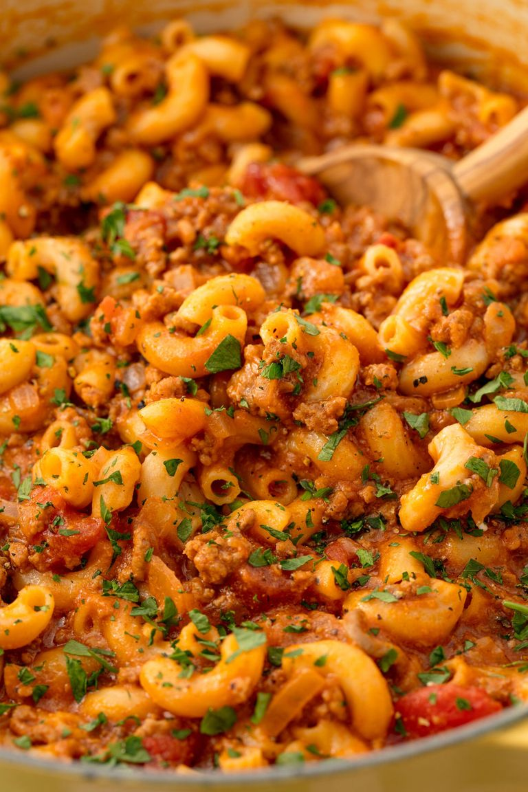

Goulash
Description
We love the fact that EVERYTHING in this recipe cooks in one skillet—the beef,
the sauce, and the macaroni.
Once you cook pasta this way, you'll never go back to boiling water again.
Ingredients
- 2 tbsp. extra-virgin olive oil
- 1 medium yellow onion, chopped
- 2 cloves garlic, minced
- 1 lb. ground beef
- Kosher salt
- Freshly ground black pepper
- 1 tbsp. tomato paste
- 1 1/4 c. low-sodium beef broth
- 1 (15-oz.) can tomato sauce
- 1 (15-oz.) can diced tomatoes
- 1 tsp. Italian seasoning
- 1 tsp. paprika
- 1 1/2 c. elbow macaroni, uncooked
- 1 c. shredded cheddar
- Freshly chopped parsley, for garnish

- In a large skillet over medium heat, heat oil. Add onion and cook until soft, about 5 minutes. Add garlic and cook until fragrant, about 1 minute more.
- Add ground beef and cook until no longer pink, about6 minutes. Drain fat and return to pan. Season with salt and pepper.
- Add tomato paste and stir to coat, then pour in broth, tomato sauce, and diced tomatoes. Season with Italian seasoning and paprika, and stir in macaroni. Bring to a simmer and cook, stirring occasionally, until pasta is tender, about 15 minutes.
- Stir in cheese and remove from heat. Garnish with parsley before serving.